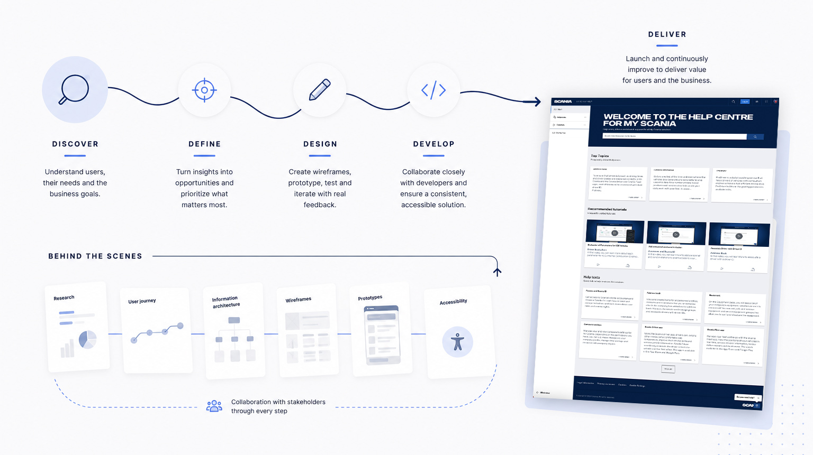
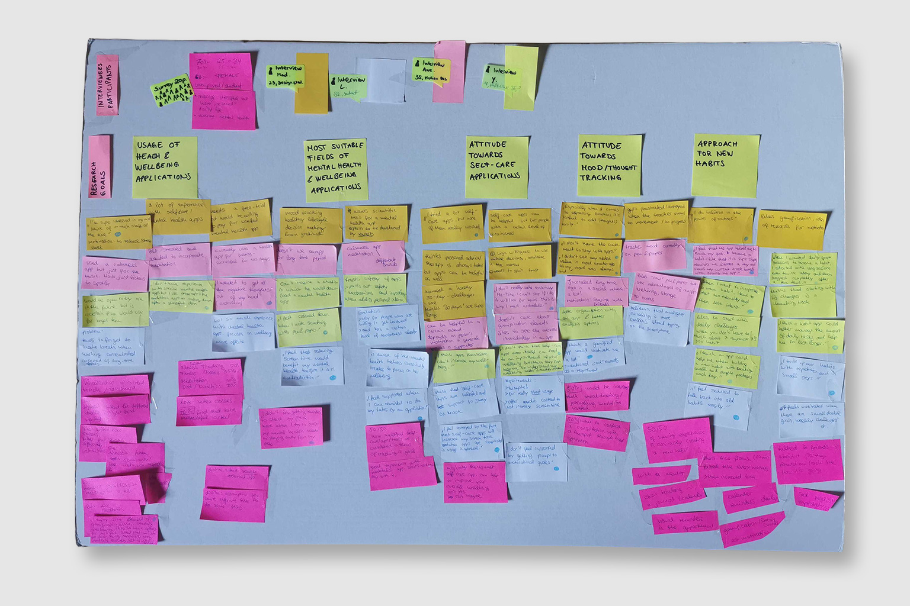
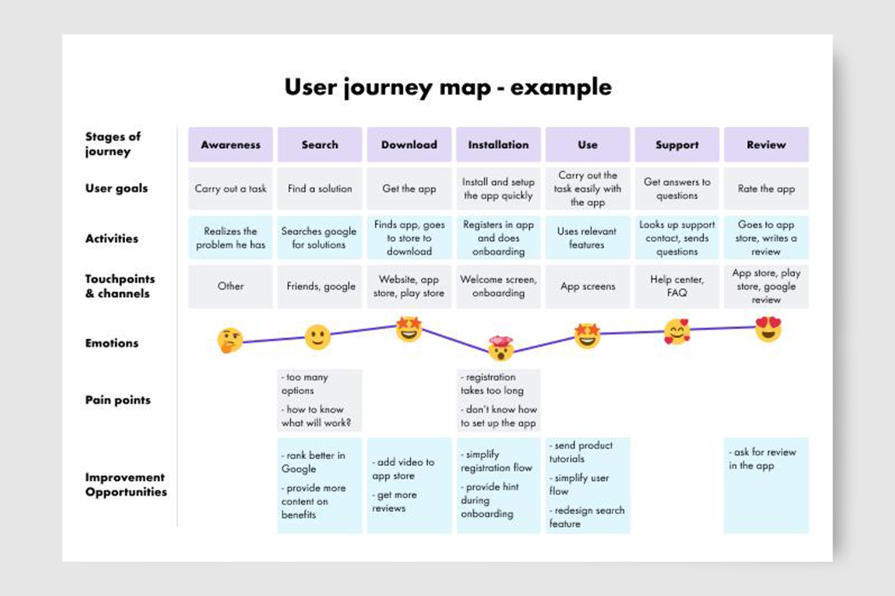
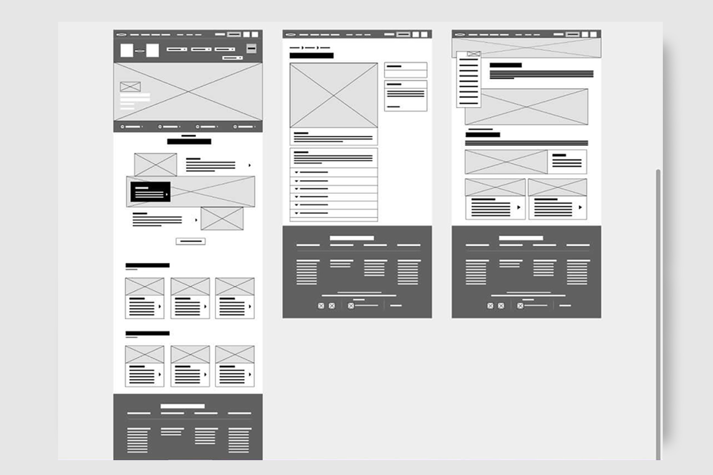
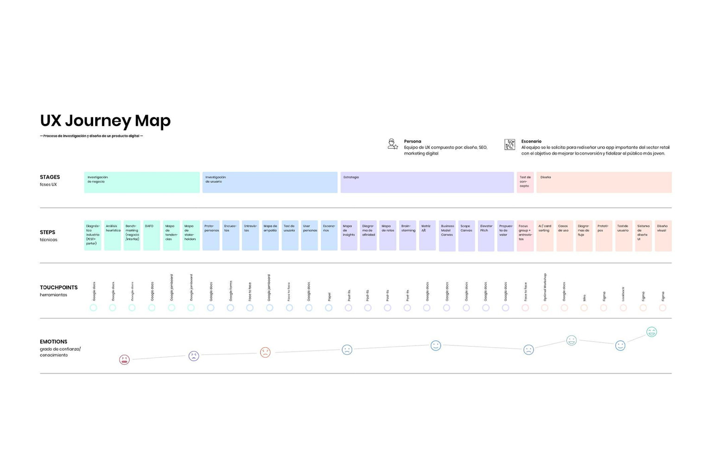
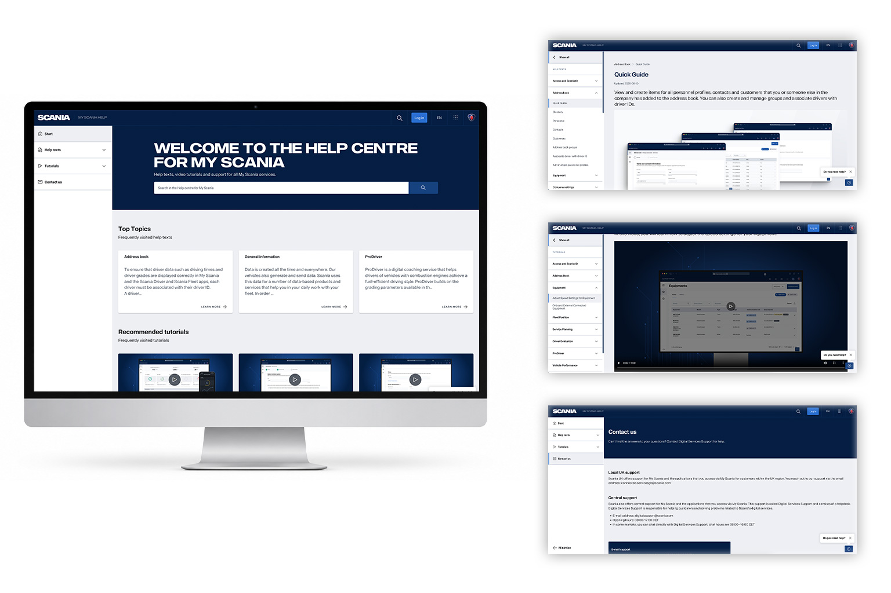

Web app concept · current
Scania - Help center
I worked as the UX Designer, collaborating closely with Product Owners, developers, and stakeholders to create an intuitive Help Centre that helps employees quickly find answers and complete tasks with confidence.
UX/UI Designer
Web app
Interaction · Visual design · responcive . accessibility
Figma · AEM . Analytics

Discover
Understanding users and business needs.
Through user research, stakeholder workshops, analytics, and support insights, we identified pain points and opportunities to improve the support experience.

Define
Turning insights into a clear product direction.
Working with the Product Owner, we prioritised features, mapped user journeys, and organised the information architecture to create a scalable experience.

Design
Designing and validating solutions.
I created wireframes and interactive prototypes, testing ideas with stakeholders and refining the experience through continuous feedback.

Develop
Collaborating throughout implementation.
Working alongside developers during every sprint ensured designs were implemented accurately while continuously improving the experience.

Deliver
Launching and continuously improving.
After launch, we gathered feedback, monitored usage, and iterated the product to deliver ongoing value for users and the business.

Behind the Scenes
Every release was supported by a structured UX process that kept users, Product Owners, and developers aligned.
UX Activities
- User Research
- User Journeys
- Information Architecture
- Wireframes
- Prototype
- Accessibility
- Developer Collaboration
- UX QA
My Role
UX Designer
I led the UX process from discovery to delivery, collaborating with Product Owners and developers to design, validate, and continuously improve the Help Centre experience.